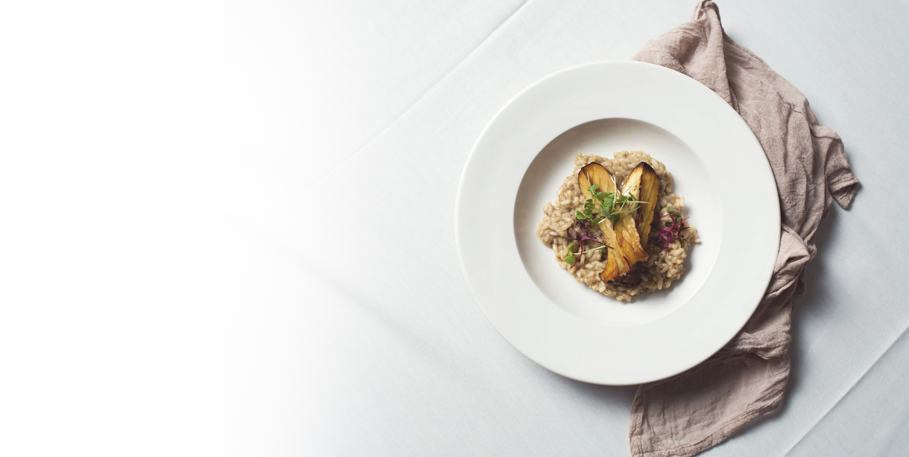

Ballantyne Village • Charlotte NC
Hand-Rolled Daily, Cooked Al Dente.
Every pasta on our menu is made completely from scratch in our kitchen using Italian Caputo flour and farm-fresh eggs. Discover our hearth-baked pizzas, prime veal cuts, and fresh Mediterranean seafood.

Zinicola Menu
Handcrafted Scratch Pastas, Wood-Fired Pizzas & Italian Entrées